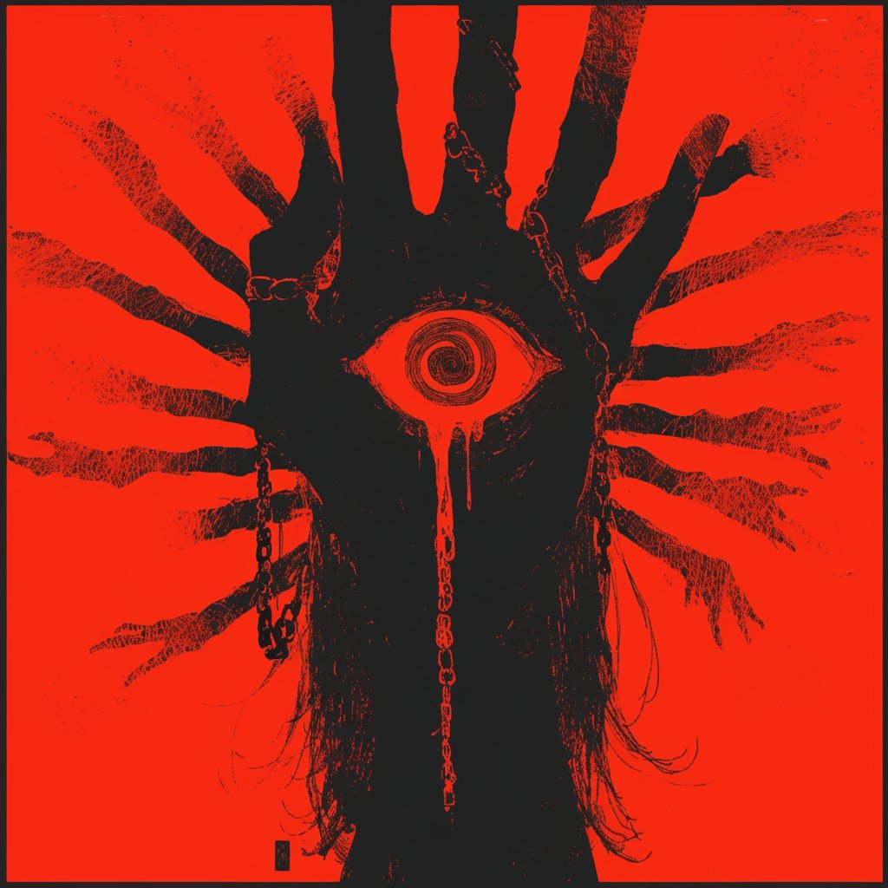
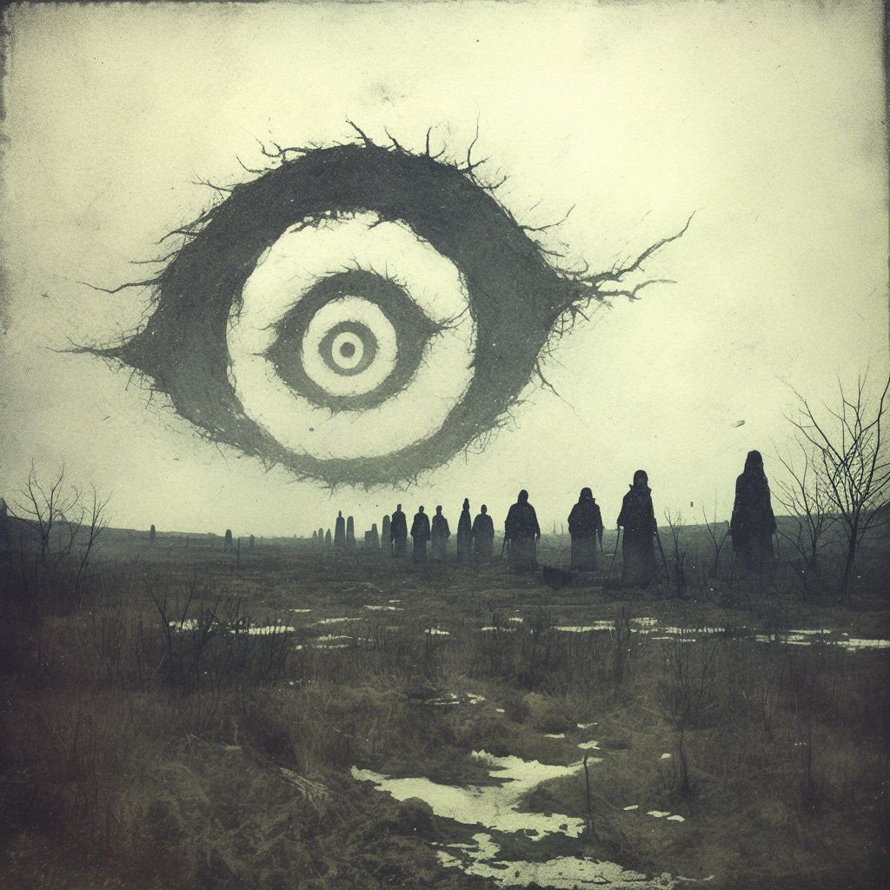
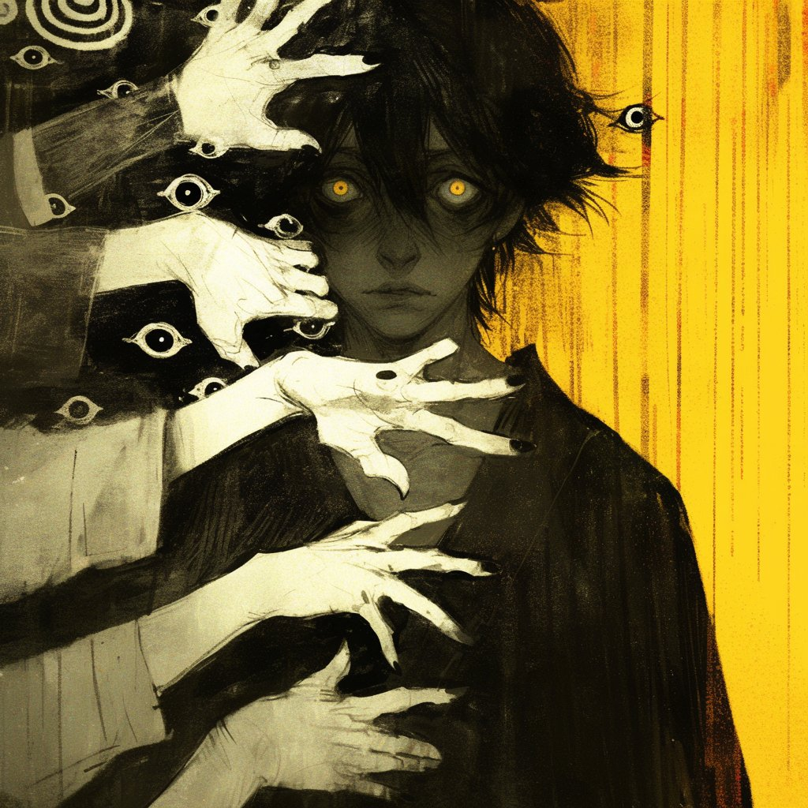

Гена принёс мне ботинки и попросил нарастить каблук на три сантиметра. Его, видите ли, на работе не уважают.
- На оба? - спрашиваю.
- А ты чё, мне разное уважение на каждую ногу сделаешь?
Я тогда ещё не знал, что это у нас философия началась. Думал - обычный дурак с обувью. Тут Лида из копировального принесла распечатку. Сверху написано «Имперский Квадроберский Джайнизм». Я посмотрел на Гену, на ботинки, потом опять на бумагу. Ботинки показались самым простым из трёх.
Меня вообще зовут Виктор Павлович. Палыч. Будка у заводской проходной, ключи делаю по средам, если станок не мудит. Надя у меня жена, Лёха - племянник, заодно ученик. Гену я не нанимал: он сам ходит, как погода.
Книжку я прочитал. Не сразу. Сначала вернул Лиде и сказал, что с такими словами надо обращаться в ритуальные услуги. Потом забрал обратно. А потом мы с Геной так завелись, что у него к концу разговора даже ноги снова стали одного роста.
Вот что я ему рассказывал. Если начну умничать - стукни по прилавку. Только не тем ботинком, который на клею.
Где о чём базар
Книга Первая. Кто насобирал эту хреновину
§1. Заказчика у вселенной не нашли
Я как-то пришёл с утра, а у меня на полу всё плавает. Трубу прорвало. Гена стоит посреди воды и спрашивает, где тут начало.
Я говорю: «У трубы, долбоёб. Тут конкретно у трубы».
А в книжке начало другое. Не где потекло, а что такое должно быть вообще, чтобы нашлись и труба, и Гена, и кого за это материть. Назвали Истоком. Движение, которому ещё не выдали ни форму, ни номер, ни время приёма.
Гена сразу захотел узнать, один этот Исток или их несколько. Очень он любит, когда чего-нибудь несколько: можно договориться с запасным.
Лида говорит: «Ты ещё считать не научился, а уже считаешь». Не в смысле Гены, хотя и в этом тоже. До всякой меры спрашивать «сколько» - всё равно что у тумана требовать сорок третий размер.
За вселенную там никто не расписывался. И найти старшего, чтобы пожаловаться, не удалось. На этом у Гены кончился интерес к космологии, но вода уже подошла к розетке.
§2. Как инструкция получила отдельный стул
Без порядка я бы за день потерял все шила и одного клиента. Шила у меня лежат справа. Клиент - где ему удобно, пока не наступил на шило. Это нормальное устройство мира.
Однажды я велел Лёхе всё раскладывать, как у меня. Через неделю выяснилось, что он левша. Ему каждый раз приходилось тянуться через руки.
- А чего молчал?
- Ты же сказал: тут всё правильно.
Вот, сука, и приехали. Сперва порядок помогал работать. Потом работу заставили помогать порядку.
У меня на полке старый ботинок-образец. Восемь лет стоит, ни разу не пожаловался. Очень дисциплинированный. Надеть нельзя, зато образцовый. Рядом паяльник греется: огонёк всё время другой, а дело делает.
Ни в ботинок этот превращаться не надо, ни будку поджигать ради свободы. Лёха переставил шила налево. С тех пор они у нас лежат правильно для того, кто ими сейчас работает. Образец пока терпит.
§3. Гена устроил революцию
Когда Гену достал начальник, он послал его нахуй. Мы вечером у проходной даже постояли торжественно. Гена курил так, будто лично отменил крепостное право.
Через месяц он устроился в другое место и начал орать на молодых. Теми же словами. Одно слово даже сначала говорил голосом прежнего начальника, потом освоил собственный.
Я спрашиваю: «Ты ж от этого ушёл?»
Он говорит: «А как с ними иначе?»
Нормально получилось. У старого зла появилась новая спецовка.
Поэтому, когда внутри всё грохочет, я теперь не спешу салютовать. Особенно если после грохота все вокруг начинают ходить на цыпочках. У нас тут одна железная дверь громыхает так, что крысы приседают. Свободнее от этого ни одна крыса не стала.
§4. Гарантийный талон на вчера
Лет в двенадцать отец сказал мне, что из меня толку не будет. Сказал между делом, за супом. Суп я доел, а фразу таскал с собой лет сорок. Отец давно умер, а я всё ещё сдавал ему готовую работу.
Успевал к сроку - мало. Сделал хорошо - можно было лучше. Похвалили - наверное, из жалости. Сидит мёртвый человек у тебя в голове на табуретке и не подписывает накладную.
Я Наде рассказывал: вот ещё станок куплю, ещё очередь наладится, ещё накопим - тогда поживём. Она однажды спросила, кто нам продаёт это «тогда». Я разозлился. Не люблю, когда спрашивают, где именно у моей жизни склад.
Прошлое пригодилось: шов я вслепую найду. Но с чего я взял, что сегодняшний человек пришёл оценивать меня за тем супом?
В тот вечер я ушёл домой вовремя. Дома ничего особенного не произошло. Надя жарила картошку. Я сидел на кухне и никак не мог привыкнуть, что меня уже никто не задерживает.
Книга Вторая. Палыч по документам и Палыч вообще
§5. Отец хотел токаря
Мне давно нравится чинить вещи. Именно возиться, когда ещё непонятно, где отошло и что можно сохранить. Я и в детстве разбирал всё подряд. Правда, ремонт иногда происходил не с того конца: до меня вещь хотя бы выглядела целой.
Отец хотел, чтобы я стал токарем. Я поступил, походил, поработал. Хорошие люди, нормальная работа. А я будто каждое утро приходил за кого-то другого. От этого особенно стыдно: придраться-то не к чему.
В книжке для своего движения есть слово «Свабхава». Я его сначала написал на бумажке и прижал банкой. Думал, если забуду название, хоть банку найду.
Но оно было во мне и до бумажки, и до токарки. Не сама профессия: это я мог бы иначе выразить. Не набор моих привычек, половину которых лучше бы не передавать потомству. То, откуда я вообще могу своим ответить.
Гена спросил, можно ли такую штуку развить побольше. Я предложил сперва перестать каждый день наступать на то, что уже есть. На этом месте он перестал кивать.
§6. Электричество есть. Куда подключили?
У меня была гармошка. Точнее, есть. За шкафом стоит, поэтому формально мы с ней ещё не поссорились.
Раньше я играл. Потом всё некогда, потом не для кого, потом пальцы уже не те. Так я всем и рассказывал: возраст. А зимой гости разошлись, и я достал. Надя из кухни слушала, не выходя. Не мешала мне делать вид, что я никому не играю.
Пальцы помнили. Не всё. Пару раз я так промахнулся, что даже кот ушёл без объяснений. Но внутри пошло такое, что я потом ещё долго не мог спать.
Силы за день были те же самые. На работу хватало, на злость хватало, на вечное «когда-нибудь» хватало. А на своё якобы не было. Вот куда у меня всё это было подключено?
В книжке сила выражения зовётся Шакти. Имя можешь запомнить потом. Я тебе лучше сыграю. Только не начинай заранее хвалить, я ещё меха не раздвинул.

§7. Не буди правую руку
Лёха как-то поменял мне местами чашку и коробку с гвоздями. Я сел, протянул руку и едва не хлебнул крепёж. Он потом долго объяснял, что хотел протереть стол. Я долго отвечал. Оба при деле.
Рука знает стол. Хорошо, что знает: если каждый гвоздь заново открывать, на одну набойку уйдёт человеческая жизнь.
Только она и чужую доброту иногда знает как опасность. Мне предлагают помощь, а я уже ищу, сколько потом буду должен. Человек ещё рта не открыл про долг. Это рука сама потянулась не в ту коробку.
За годы у каждого прорезается своё ложе, куда всё привычно идёт. В трактате Русло. В нём и то, чем ты умеешь жить, и такие изгибы, из-за которых жить уже негде.
Чужое слово тоже может пригодиться. Я у другого мастера половину приёмов выучил. Не стану же теперь драть подошву зубами, чтобы всё было исключительно моё. Но если от старого приёма новую кожу рвёт, нечего доказывать коже, что она неправильно пришла.
§8. Три человека чинили один замок
Принесла женщина сапог. Замок разошёлся. Я взялся как обычно, а она говорит: «Только верх не меняйте, мне там удобно».
Старый я уже знал, как такие замки делают. Нынешний случай мешал: кожа другая, нога другая, просьба другая. И что-то моё не хотело ни отделаться, ни героически всё разнести и построить заново.
Гена смотрел, смотрел и спросил: «Ну и кто из вас решил?»
Решил тот я, который сидел с этим сапогом и этой женщиной сейчас. Вместе с руками, прошлой работой и своим желанием разобраться. По отдельности они бы ей только три разных совета дали.
В книжке такого живого, который вся эта встреча целиком, зовут Дживой. Слово короткое, Гена даже обрадовался. Решил, что наконец запомнил главное. Пришлось его огорчить: запомнить имя - ещё не побыть тем, кого назвал.
§8a. Фотография с хорошим человеком
Над кассой у меня висит фото. Местная газета снимала: я добрый, фартук чистый, в руках ботиночек. Подпись - «Мастер, который возвращает вещам жизнь». После этой подписи я недели две почти не ходил, всё больше присутствовал.
А потом Лёха уронил мой старый инструмент. Я даже голоса, как мне казалось, не поднял. Встал, спросил, зачем руки из жопы, подошёл объяснить поближе. Гляжу - он прижат к стеллажу.
- Ты чего?
- Жду, пока ты закончишь.
У меня-то было намерение помочь мальчику стать аккуратнее. У него перед лицом стоял дядька, от которого некуда отступить. И это был я. Не ошибка в характеристике, не чужой поклёп на газетную фотографию.
Я первым делом захотел доказать, что вообще-то другой. То есть опять принести ему вместо себя хорошего человека с рамкой. А надо было выдержать: вот как я сейчас для него существую. Не выбить из него заверение, что я всё-таки ничего.
Когда не пришлось немедленно защищать фотографию, внутри тоже поутихло. Стало слышнее, где я действительно хочу что-то объяснить, а где мне нужно только, чтобы рядом опять стало тихо.
Фотографию я потом снял. Лёха поглядел на пустой гвоздь и говорит: «Ты и без неё можешь». Сука, какой толковый растёт. Повесил обратно. Пусть висит, только работу за меня больше не принимает.
Книга Третья. Кто поселился у меня в затылке
§9. Четыре Палыча на один фартук
Я когда прижимаю, у меня четыре любимых способа.
Могу рявкнуть. Могу замолчать так, что человек готов переселиться, лишь бы не сидеть рядом с этим молчанием. Могу объяснить, что я вовсе не надавил, это у меня такая забота. И могу набрать заказов, денег, благодарностей - ещё немножко, ещё самую капельку, потом успокоюсь.
Последний способ особенно хорош: пока не успокоился, можно ещё немножко.
У всех четырёх одна хватка. Мне нужен уже известный ответ. Чтобы не качнулось моё место, чтобы опять оказался прав, чтобы не пришлось встретить того, кто пришёл.
Лида ткнула в бумагу: «Кашая». Я говорю: «Звучит как заболевание начальственного состава». Она говорит: «Палыч, бумагу от себя не отодвигай». У этой женщины иногда отвратительно точный палец.
§10. Засов и укреплённый район
После кражи я поставил на будку засов. Нормальное дело. Ночью закрыли, утром открыли.
Потом начал дёргать его днём. Человек заходит, а у меня уже всё внутри щёлкнуло. Один глаз на клиента, другой на его руки, третьего не хватает смотреть на кассу. Работаю как муха, толку мало.
Надя говорит: «Тебе же не надо теперь всю оставшуюся жизнь красть у себя мастерскую».
Я ей сперва объяснил, почему она не понимает. Очень подробно. Закрыл засов даже в разговоре.
Страшно бывает по делу. Отступить, не пустить, сказать «со мной так нельзя» - это не поломка души. Но мой замок уже перестал отличать вора от бабушки с пакетиком. И держался не одним страхом. Ещё очень не хотелось признать, что я переусердствовал. Жалко же: такой охуенный засов поставил.
§11. Капля за каплей, а потом не отдерёшь
Гена как-то поставил кружку прямо на свежую склейку. Потом поднял кружку вместе с работой. Я произнёс его имя так, что он сразу вспомнил всю родню.
Одна капля ещё ничего. Но туда же, ещё туда же, без взгляда, без остановки. Потом приходится отдирать то, что вчера ещё само расходилось.
Я всю молодость улыбался, когда на меня наезжали. Один раз помогло: отцепились. Второй тоже. Потом человек ещё только собирается сказать, чего хочет, а я уже, блядь, рад его видеть. Даже если совсем не рад. Особенно если не рад.
Сами встречи не виноваты, что я из одного спасительного хода сделал железную дорогу без стрелок. След пристаёт, когда держишься за повтор. А иногда я даже не держусь - просто не смотрю. Мне третий раз сказали, что я перебиваю, я третий раз объяснил, какой я открытый человек. Глаза хоть дома забыл, зато рот исправен.
Из этого не выскакивают одной умной мыслью. Но и последнего приговора тут нет. Сегодня я опять улыбнулся из страха - ещё не значит, что мне теперь до конца времён улыбаться всем, включая кирпич, который летит в голову.
А вот рассказы про следы из прежних жизней я тебе на своих инструментах не докажу. Книжка в них верит. Я оставляю этому место, но чужую беду ими не объясняю. Кто начнёт выяснять, за что человеку якобы положено страдать, может сперва выяснить, где у нас аптечка и кому нужна помощь.
§12. Гена и вертикальная сила воли
После похорон матери Гена однажды не смог выйти из квартиры. Дверь исправна, ключ у него. Он мне в трубку всё это перечислял, будто я приехал замок менять.
Я приехал и сел на ступеньки. Сначала говорил умное. Потом заткнулся, потому что через дверь и так было слышно, как ему от моих слов тяжело. Посидел. Пакет с едой поставил рядом. Гена потом открыл, но я не знаю, сколько мы так были.
На другой день он опять извинялся. Всё объяснял, почему не собрался. Я сказал: «Ген, ты не стул. Тебя не надо собирать».
У нас очень любят самостоятельность, когда она позволяет спокойно уйти. Ключ-то твой, чего ты там. А держать руку, пока человек сумеет сам повернуть, не так торжественно. Ногу затекает на лестнице, курить хочется. Никто не выдаёт ни грамоты, ни власть над тем, кого дождался.
§13. Желание выломать окно
Мне однажды захотелось выкинуть станок в окно. Вроде пустяк случился, а внутри встало так, что я уже окно измерял.
Лёха говорит: «Палыч, у нас под окном люди».
Самое неприятное возражение. На высокую драму отвечают расположением граждан.
Я не выкинул. Потом сидел, злился, пил воду. Из-под всей этой железной ярости вылезло, что я просто заебался быть нужным всем без выходного. Я ведь и отказывать не умел: сначала всех принимал, потом ненавидел очередь.
Злость пришлось услышать. Людям снизу не пришлось от этого защищаться. Ни один из них не обязан был предоставить мне свою голову для освобождения внутреннего Палыча.
Станок стоит до сих пор. А в воскресенье я теперь могу закрыть будку. Гене сначала не понравилось. Теперь привык обходиться без меня целых двадцать четыре часа. Растёт человек.
Книга Четвёртая. В будке стало тихо, и тут началось
§14. Вскочил раньше, чем придумал причину
Про Генкину дверь я тебе рассказывал. Я ведь к нему поехал прежде, чем успел решить, кто мне за это заплатит. Уже ботинки натягивал, а ум ещё только собирался выдать пропуск поступку.
Лида потом прочитала мне про Хридаю, мистическое сердце. Я сказал, что у меня мистическим пока только пенсионный стаж числится. Она посмеялась и спросила, откуда я знал, что надо ехать.
Не знал. Услышал Гену, и во мне отозвалось. Своим, без свидетелей. Только это ещё не значит, что всякий мой внутренний подъём такой же честный.
Я однажды с тем же жаром пошёл человеку помогать - и уже у двери понял, что вообще-то иду показать, какой он без меня беспомощный. Даже гостинец нёс. Ебучее сердце, думал, а это самолюбие надело чистую рубашку.
Так что присутствие своё есть. А слух к нему у меня ещё тот: могу услышать жизнь, могу собственное шипение принять за радиопередачу из вечности. Хорошо, если по дороге хоть раз остановлюсь.
§15. Пять минут, которые я пытался выполнить
Первый раз я сел в тишине с таймером. Отработал три минуты, проверил - прошло сорок секунд. Ну и время нынче, думаю, совсем охуело.
Ещё через минуту составил список долгов. Потом вспомнил, кому не перезвонил. Потом начал мысленно спорить с человеком, которого лет шесть не видел. Этот, между прочим, опять оказался неправ.
Надя заглянула:
- Что делаешь?
- Слушаю себя.
- Ты уже вслух ему отвечаешь.
Пришлось познакомиться с населением. Ничего сияющего из-под него сразу не вышло. Сначала хотелось убедить и тишину, что я всё делаю как надо. Потом устал её уговаривать.
Лида сказала, что можно пока не знать, что слышишь. Я даже обиделся. Столько посидел, а никакого готового ответа не полагается. Дорогая вещь это её «не знаю». До сих пор стараюсь не заменять первым попавшимся умным словом.
§16. Заявление на увольнение и три хитрости
Гена принёс заявление. Красивое: половина букв с нажимом, в конце должность начальника зачёркнута так, будто она сама виновата.
Я говорю: «До утра полежит?»
- Думаешь, струшу?
- Думаю, клей под ним свежий.
Утром желание уйти осталось. Зато исчезло желание непременно сделать это так, чтобы начальник умер от понимания, кого потерял.
Потом я спросил, уйдёт ли он, если мужики не станут считать это подвигом. Тут Гена задумался дольше. У него уже была готова речь для курилки.
А на третьем разговоре сказал: «Мне, Палыч, хочется, чтобы он хоть раз признал: я тут не последний хуй». Вот тут и началось настоящее. И обида его, и нужда жить иначе - всё было вместе. Не пришлось выбирать, какая половина запрещённая.
Только не делай из этих разговоров автомат. Хватка тоже может сутки подождать, сама себе поаплодировать и выучить точное признание. Если всё сошлось на словах, посмотри, что человек потом делает. Если не сошлось - это не голосование. Гене ещё думать пришлось.
А там, где уже сейчас опасно человеку, ждать красивой ясности некогда. Сначала отдёрнешь руку от горячего. Потом будешь разбирать, насколько осознанно матерился.
§17. Гена предъявил духовное достижение
Однажды он зашёл такой тихий, что я сперва решил: денег занять. Сел, сказал, что многое понял и больше ни за что не держится.
Я на всякий случай прижал квитанции.
Завтра он так же торжественно понял обратное. Послезавтра принёс новые выводы. Потом мы перестали выдавать медали за отдельный вечер.
Перемены я заметил гораздо позже. Как-то Гена попросил у начальника выходной и не провёл потом со мной два часа, доказывая, что имел право просить. Другой раз поссорился с Лёхой, ушёл, вернулся и смог выслушать то, от чего раньше ещё в дверях развернулся бы. А ещё начал ходить туда, где не знал заранее своей роли. Даже на танцы записался. Сказать «Гена на танцах» пока трудно без улыбки, но он-то пошёл.
При людях и без людей в нём всё меньше приходилось одному Гене предавать другого. Не одинаково говорил со всеми - просто не сдавал себя ради нужного ответа. И возвращался легче, и нового не оставалось всё меньше.
Он спросил, заметно ли. Я сказал, что заметно. На этот раз мы даже обошлись без вручения чего-нибудь тяжёлого.
Книга Пятая. Как уважаемый человек оказался под столом
§18. Спина услышала раньше головы
У нас на заводе раньше был начальник, который говорил тихо. От этого все слушали ещё старательнее: вдруг уже увольняют, а ты не расслышал.
Головой я его давно послал. А встретил однажды в магазине - и плечи сами приподнялись, улыбка вылезла, голос стал на размер меньше. Стою, блядь, взрослый мужик с картошкой и докладываю, где теперь работаю.
Дома рассказал Наде, она спросила, с какой минуты я это заметил. С той, говорю, когда уже почти позвал его к нам бесплатно чайник починить. Он слесарь? Нет. Но моя спина уже собрала ему рабочее место надо мной.
Вот поэтому одной беседой с головой я не отделался. У неё все решения прогрессивные, а тело ещё двадцать лет назад получило другие распоряжения.
Когда мы начали пробовать четыре опоры, я первую же минуту возненавидел само помещение. Оттуда всё выглядело иначе. С такой высоты даже собственный стол не поддерживает твою репутацию. Он просто большой, и снизу на нём жвачка. Кто приклеил, сука? Скорее всего, я.
§19. Генины три сантиметра
Помнишь ботинки? Каблук Генке так и не помог. Зато он пришёл в них на нашу первую совместную возню и полез указывать, где кому встать.
Уже на коленях, между прочим. Я смотрел и думал, что уважение у него, видимо, во все четыре опоры пошло.
- Лида, тебе лучше сюда. Лёха, не так. Палыч, что ты молчишь?
- Наслаждаюсь отсутствием иерархии.
Он не сразу понял. Потом обиделся - тоже снизу вверх, вполне успешно.
Четыре опоры сами по себе ещё никого не освобождали от любви командовать. Но теперь было невозможно не заметить, как настойчиво он ищет место повыше, даже когда никакого повыше нет.
Надя в тот день вообще устроилась сидя. Как ей удобно было. Ни один небесный проверяющий не вылез с транспортиром. А если бы вылез, я бы предложил ему самому поприседать, пока не поймёт, куда пришёл.
§20. Морда уважаемого человека
Маску я выбирал долго. Очень хотелось такую, в которой даже на четвереньках видно: пришёл взрослый, ответственный человек.
Лёха предложил маску директора. Смешно ему.
Надел простую. И сразу начали чесаться все мои человеческие регалии. Хотелось объяснить, что это временно, по делу, что я вообще-то не такой, как сейчас выгляжу. Вдруг зайдёт кто-нибудь из клиентов?
Однажды действительно зашёл. За сапогом. Глянул, спросил, готов ли, забрал, ушёл. Я после него минут десять приходил в себя. Человек просто пришёл за сапогом, а у меня внутри рухнула выставка достижений.
И как ни странно, это оказалось полезнее, чем если бы он проникся. Я остался без публики, которой доказывал серьёзность. Колени, дыхание, неловкость. Хотелось вскочить - я впервые успел услышать, от чего именно бегу, прежде чем вскочил.
За другого этот момент не выдавишь. Гена бы рад выдавить, он человек деятельный. Но от приказа «да расслабься ты уже» у нас пока только отчётность расслабляется.
§21. Кого я сорок лет не пускал в мастерскую
Сначала я ждал, что из-под всей этой дури выйдет кто-нибудь молодцеватый. Выйдет и скажет: «Ну, Палыч, теперь заживём».
А полезло такое, что я бы посетителя с этим сперва не принял. Злость на отца. Желание, чтобы меня хоть раз просто пожалели. Зависть. Маленькая, стыдная, кусачая. И ещё хотелось прижаться к живому человеку, не делая предварительно для него подвиг.
Я даже готов был убираться в будке, лишь бы не сидеть с этим богатством. Лида спросила, можно ли ей остаться рядом. Я кивнул. Больше она тогда ничего полезного не сказала. Поэтому и смог остаться.
У меня полжизни одно правило: понравилось в себе - вот это я. Не понравилось - кто-то насрал. А тут пришлось впустить хозяина вместе со всей его неблагоустроенной территорией.
Только лом я этому хозяину в руки не дал. Услышать, как давно тебя теснили, ещё не значит назначить всех остальных платить за тесноту. Пусть сядет. Стул найдём. Главное - опять не выгнать за то, что некрасиво попросил.
§22. Я выучил говорить «нет» и ждал пятёрку
Лида помогла мне назвать злость злостью. Полегчало до смешного. Слово-то я знал лет с четырёх, но своему так сказать не разрешал: у меня был либо справедливый гнев, либо ничего особенного.
Потом она попросила помочь на выходных. А я не хотел. И вышла превосходная сцена: у меня чужое выученное «нет» в зубах, я мнусь и жду, чтобы она сама разрешила его произнести.
Наконец сказал. Она ответила: «Ладно, я другого спрошу». Ни грома, ни изгнания. Я даже немного разочаровался: так долго готовился к катастрофе, а у людей другие планы нашлись.
Хуже было позже, когда мне предложили переделать мастерскую под чужую сеть. Всё по уму: реклама, заявки, вывеска. Денег обещали больше. Я уже во сне рассказывал отцу, что наконец устроился.
Отказался. Боялся и после отказа, не надо тебе врать. Решение не становится своим только от того, что перестало трясти. Но когда спрашивали, я мог ответить без чужой речи: я решил. Не Лида за меня, не трактат. И за то, что дальше, отвечаю тоже я.
На другой день пришлось узнать себя ещё и в том, что я Лёхе сгоряча наговорил. У моего «кто я» не оказалось последней страницы. Очень обидно: думал, сейчас один раз разобрался и можно дальше жить по справке.
§23. Генеральная уборка человека
Как-то я выкинул из будки весь хлам. Пыльные коробки, старые стельки, три одинаковых шнура неизвестно от чего. Навёл такую чистоту, что сам потом часа два не мог ничего найти.
С человеком я долго пытался поступить так же. Нежность оставить, злость на помойку. Страх убрать, достоинство на видное место. Получался такой правильный Палыч, что ему даже заказ оставлять не хотелось: ясно же, не до тебя человеку, он собой занят.
А потом оказалось, что и злой я могу не перестать заботиться. И испуганный могу сказать «нет». И желающий близости не обязан покупать её услугами. У частей не потребовали сперва выиграть друг у друга право жить.
Я бы сказал, стало тише, но это неправда. Сначала стало заметно многолюднее. Просто меньше дверей хлопало.
А потом в эту человеческую мастерскую полезли такие жильцы, которым вообще не подходило ничего из моего житейского резюме. Гена как раз заказал вывеску. Серьёзнейшую, блядь. Вот с неё начинается следующая книга.
Книга Шестая. Проект Комплементации Квадроберов
§24. Гена обещал узнать своего волка
Вывеска была на двух листах. На первом - «Проект Комплементации». На втором - «Квадроберов». Я сказал, что при таком названии к нам придут либо спасать человечество, либо требовать лицензию на сварочные работы.
Гена хотел узнать в себе волка. Уже продумал, какой. Чтобы взгляд тяжёлый, одиночество достойное, а окружающие по возможности сами понимали.
У меня никаких волков не получилось. Было одно мелкое упрямое движение: забиться поглубже, слышать, где кто ходит, не давать себя оттуда выковырять. Я его сначала даже презирал. Хотелось хоть в собственном внутреннем хозяйстве выглядеть посолиднее.
Зверь не пришёл для украшения моей биографии. И человеком, которого в детстве недохвалили, тоже не исчерпывался. В книжке это связано с жизнью шире нынешнего тела, с прежними её формами. Я тут никому не продам справку о прошлых воплощениях. Но и подгонять услышанное под приличную человеческую историю больше не собирался.
Гена, кстати, перестал заказывать волка. Когда перестал, у него впервые что-то своё и отозвалось.
§25. У барсука тоже были обязательства
Я потом увлёкся. Самого себя, понимаешь, услышал - как не увлечься. Так увлёкся, что забыл про обещанный ремонт.
Женщина пришла, а я объясняю про состояние, про внутреннюю работу. Она слушает и говорит: «Я с работы в чём пойду?»
Я чуть было не начал объяснять лучше. Это мой любимый этап, когда по существу уже нечего.
Услышанный зверь не получил права отменить ту женщину. И загонять его обратно ради приличия тоже было бы знакомое дело. Пришлось жить всем этим сразу: услышать нужду, взять на себя обещанное, найти время, в котором одно не жрёт другое.
Уже узнанного тоже слушают заново. Если вчера хотелось спрятаться, это не пожизненная прописка под шкафом. Я потом и названия перестал так торопливо раздавать. Гена иногда спрашивает, кто у него сейчас. Я говорю: «Слушай. Я сапожник, а не паспортный стол лесничества».
§26. Всех жильцов выселять не понадобилось
У меня в одной жизни помещались желающий, испуганный, способный огрызнуться, способный остаться рядом. Потом стали помещаться и те способы жить, которым человеческого имени не находилось. Сперва казалось - будка мала, надо назначить одного ответственного и остальных заткнуть.
Назначал я такого много раз. Обычно это оказывался я же с самой громкой частью рта.
А тут один мог испугаться, другой - упереться, третий - почувствовать чужое тепло, и всем не требовалось расправиться с соседом ради одного моего шага. От этого шаг становился собственным целиком. Силы прибавлялось не потому, что мне нового зверя привезли мешком. Старая сила переставала уходить на круглосуточную коммунальную войну.
Вот это громко и называется комплементацией. Гена хотел торжественный момент. А я заметил за собой, что в трудном разговоре впервые не понадобилось сначала кого-нибудь своего заколотить. Так и просидел с молотком без работы. Хороший был вечер.
§27. Гена решил отменить одиночество оптом
Потом мы попали к людям, у которых всё было общее. Даже ответы. Им задаёшь разным вопрос, а они улыбаются одним и тем же местом.
Гене сперва понравилось. Не надо никого угадывать, никто тебе не отказывает, со всеми заранее договорились о главном. Он после своей пустой квартиры очень хотел места, где никто не пропадёт.
Только когда он захотел уйти, ему начали объяснять, кого он этим ранит. И как это у него опять включилась отделённость. И что настоящие свои так не делают. Выход вроде был, но около него стояло столько любви, что не протиснешься.
Мы ушли. Гена по дороге молчал. Потом сказал: «Я ведь правда хотел, чтобы мы все были вместе».
Я сказал, что тоже. Только я хочу, чтобы к нему можно было зайти, а не чтобы из него было невозможно выйти.
Общее тепло ещё узнаётся и тогда, когда свои края почти перестают чувствоваться. Но держать человека там навсегда ради того, чтобы больше не встретить его отдельного, - это уже такая вечная семья, что лучше бы дали в морду и отпустили.
Книга Седьмая. Империя размером с два чайника
§28. Работа, за которой я иногда сам появляюсь
Одна женщина принесла туфли на свадьбу дочери. Недорогие, старые. Я посмотрел, предложил сразу несколько разумных вариантов. Она всё выслушала и попросила сохранить именно эти.
У меня уже был готов ответ про целесообразность. Потом замолчал. Она ведь не просила выиграть конкурс новой обуви. В этих туфлях у неё была целая жизнь, и теперь нужно было пройти ещё один день.
Я повозился. Без героизма, просто иначе посмотрел. Когда она пришла мерить, я стоял и видел, как моя работа вообще стала чем-то для другого человека. Не пунктом в очереди и не доказательством, какой я мастер.
В книжке есть дхарма. По-моему, вот тут она и была. Не в удостоверении сапожника - я с тем же удостоверением могу человека так обойти, что он больше не придёт. А здесь собственное движение дошло до чужой жизни и не прогнало её с дороги.
Гена назвал это хорошим сервисом. Пусть. Он и закат однажды назвал освещённостью. Закат не обиделся.
§29. Самого себя под лавкой увидел
К нам прибился пёс. Тощий, подозрительный, в мастерскую сперва входил одной головой. Остальное тело держал на случай, если разговор не сложится.
Раньше я бы шумнул, чтобы не крутился под ногами. И один раз уже собрался. Рука поднялась, а он застыл. Ещё до того, как я что-нибудь решил, у меня в груди перехватило и плечо удержало руку. То мелкое, которое во мне самом наконец пустили жить, узнало чужое замирание.
Пёс не был мною. Ему по-своему болело и по-своему хотелось жить. Но отмахнуться от этого, как от помехи в будке, уже не получалось. Для удара пришлось бы сначала опять кого-то своего заткнуть.
Я сел, поставил воду. Гена подождал и спросил, не достиг ли я теперь какого-нибудь высокого состояния. Я сказал: «Ген, пока собака пьёт, хоть ты меня не оценивай».
Всё это не значит, что я могу дальше делать любую хуйню и ссылаться на чувствительность. Лёха как-то молчал после моей очередной точной речи. Слушать пришлось его молчание, а не свой рассказ о том, как я научился слышать. И за сделанное отвечать. Ведро чужой воды нельзя объявить наполненным только потому, что очень ясно узнал себя жаждущим.
§30. Устав не поместился под сахарницей
Собирались мы сперва у меня. Потом у Раи в ателье, потом ещё у знакомых. Там можно было остаться, отойти, не разговаривать. Постепенно тела перестали всё время охранять своё место друг от друга. Это началось раньше всяких красивых соглашений.
Без такого простого соседства наши слова про свободу друг другу так бы и остались словами. На четырёх опорах не спрячешь, что подвинулся ради встречи или снова уступил из страха. А когда каждый начал слышать своё разное, выяснилось: общая поза не требует одинаковых жильцов внутри.
Гена захотел устав. В уставе у него уже была должность, которой до устава почему-то не существовало. Мы поставили чайник прямо на проект. Случайно. Но государственность восстанавливать не стали.
Империей мы это называли с особенно неприличным удовольствием. Сначала люди ищут, где у нас центр. Видят меня в будке, думают - вот. Потом идут к Рае, видят, что я там даже чайник не могу найти. Обстановка делается здоровее.
Не всякого тебя каждый видит. Лёха знает мой голос у стеллажа, Надя - мой голос утром на кухне. Никто не обязан сдавать свои глаза в один общий пункт, чтобы мне наконец выписали правильную характеристику.

§31. Гена неделю никого не послал
Он сам пришёл сообщить. Сказал, что держится уже с понедельника и чувствует себя совершенно иначе.
- А я, может, сиддха? - спрашивает.
Одно слово выучил и сразу примеряет высшую комплектацию.
- А дальше? - спрашиваю.
- Что дальше?
- Ну, во все следующие дни.
Он даже обиделся, будто я ему нарочно лишние дни придумал. Но предел, где хватка больше не возобновится, - это ведь не результат хорошей недели. Будущего мы пока не видели. Всех его дней сразу - тем более.
А я вот чего не понимаю: если кто-то действительно дошёл, зачем ему становиться похожим на всех остальных дошедших? У нас людей одним и тем же давило. Перестало давить - каждый своим и проступает. Хрен ли им одинаковые лица выдавать.
И чужие ответы с жизнью не заканчиваются. Даже если больше не покупаешь одобрения, ещё надо узнавать, что сделал с другим. Я бы от такого будущего не отказался. Гена, подумав, тоже. Танцы-то он только освоил, а ему уже предлагают больше ни в чём не нуждаться.
§32. Дядя Коля ничего не возглавлял
Он приносил старые ботинки. Садился, спрашивал, сколько у меня есть времени, и мог молчать так, что рядом не приходилось срочно становиться интереснее.
Я однажды при нём понял, что не хочу брать заказ. Раньше бы нашёл уважительную ложь. А тут смог сказать прямо. Он не подсказал, что надо отказывать. Просто в его присутствии моё не сразу уступило место привычному.
Потом это заметили и другие. Не в один вечер. Долго смотрели, как рядом с ним возвращается возможность своего ответа. Вот такое признание в книжке и связано с Императором.
Гена, конечно, спросил, почему у Императора такие ботинки. Коля говорит: «Потому что я их к Палычу ношу». Недовольные лица были с двух сторон.
Ни места над сиддхой, ни справки о том, что внутри у него навеки всё ясно, это признание не давало. Если бы рядом с ним опять стало нужно молчать, пришлось бы отвечать на это, а не на старое звание. Помогает услышать - тогда и признают. Исполнять за меня мой голос Коля не нанимался.
§33. Отпустить вовремя оказалось труднее
Один посетитель схватил Лёху за ворот. Сам потерял квитанцию, сам перепутал заказ, потом решил выяснить, кто тут самый молодой. Я его руку остановил.
А потом поймал себя на том, что уже не только останавливаю. Он отцепился, отступил, а я ещё держу. Мне, видите ли, давно не выпадало так убедительно оказаться правым всем телом.
Гена сказал: «Палыч, всё». Хорошо, что сказал. Ещё бы немного - и я выдал бы себе награду за защиту племянника тем, что этому мужику очень больно.
Отпустил. Выставил. Дальше с Лёхой сидели, выясняли, как он. Героя во мне никто особенно не обслужил. Даже жаль было: такой случай пропал для самолюбия.
Силы хватило остановить угрозу. Ненужное продолжение пришлось остановить уже во мне. Необходимое от этого не стало приятным и не дало права на всё остальное.
§34. Просветлённый унёс мусор
Домой после наших важных разговоров я как-то явился с выражением человека, который многое понял.
Надя посмотрела на выражение, потом на пакет у двери. Пакет я обещал вынести утром.
Я чуть было не объяснил, где сегодня был. Во рту даже готово было особенное «ты понимаешь». Потом унёс.
На улице обидно было ужасно. Внутри столько произошло, а жизнь, тварь, опять предъявляет мусор. Но пакет-то не знал, что я возвышенный. И Надя весь день обходила не мои переживания, а вполне настоящую вещь, которую я обещал убрать.
Если своё движение нигде не становится делом, можно годами любить человечество и оставлять своим одну заботу - не тревожить твою любовь. Я иногда всё ещё начинаю туда съезжать. Пакет у двери очень помогает узнавать местность.
§35. Как мы потеряли главного
Рая однажды заболела, и на собрание к ней никто не пришёл. Мы просто устроили встречу у другого человека. Потом принесли ей еду. Она удивилась, что ничего без неё не рухнуло, и сначала это её даже задело.
Я знаю это чувство. Хочешь помогать, а внутри сидит маленький говнюк и мечтает, чтобы без тебя всё пропало. Тогда ведь точно понятно, какой ты нужный.
Поэтому запасные связи оказались нам полезнее единственного незаменимого. Люди могли пойти друг к другу не через мою будку. Ключи от общего места были не у одного. Что обещали, кто отвечает - договаривались вслух. Если вредили, дело останавливали, даже когда вредящий считался очень тонким человеком.
А Лёха однажды помог человеку, которому раньше помогал я. Я автоматически почувствовал себя старшим над этим человеком. Прямо физически прибавилось сантиметра три, как Гене.
Лёха говорит: «Ты его вообще знаешь?»
И правда, не знаю. А уже начальник. Хорошо хоть не успел расценки объявить.

Книга Восьмая. Что не помещается в квитанцию
§36. В четверг ей уже было не в чем идти
Я откладывал одну пару до лучших времён. Хотел сделать как следует, не наспех. Мне очень нравится, когда про моё промедление можно сказать что-нибудь достойное.
Хозяйка пришла в четверг. У неё был свой четверг, и к нему я обещал обувь. Она не спрашивала, на какой стадии благородства мой замысел. Ей надо было идти.
Позже я, конечно, доделал. Только её четверг уже не доделывался. Никаким мастерством.
После этого меньше стал верить в ту жизнь, которая начнётся, когда подготовишься. Теперь делаешь, теперь встречаешь, теперь твоё уже коснулось чужого. Попробовать и потом объявить, что это была не жизнь, а тренировочный подход, не получится.
И всё равно я возвращаюсь к знакомым граблям. Иногда берегу обещанное уже иначе. Иногда просто опять наступаю. Красивое слово «спираль» выдаю себе только после того, как посмотрю, где теперь у граблей ручка.
§37. За ботинками больше не придут
После смерти дяди Коли его пара стояла у меня на верхней полке. Долго. Я каждый раз переставлял её так, чтобы не пылилась. Очень деловая занятость у человека, который ничего не может сделать.
Гена пришёл, посмотрел, помолчал. Не сказал, что всё к лучшему. Я ему за это до сих пор благодарен.
Вот память этой жизни книга и не обещает вынести на руках. Ни Колин голос, ни его привычку сначала спросить, сколько у меня времени. Русло, по её вере, продолжается без этого багажа. Что вытаяло, не обязано заново стать тесным при другом теле.
Я не знаю, как проверить это по оставшимся ботинкам. Верю, что его жизнь не свелась к тому, чтобы закончиться. Но не стану приписывать уверенность ни себе, ни Генкиному горю. У него там своя мать, у меня свой старик на полке, и обоим не нужны чужие готовые ответы поверх этого.
Ботинки потом забрал внук. Я очень долго собирал их в пакет. Знаешь, какое это унижение для мастера - впервые по-настоящему хотеть отремонтировать то, что тебе вообще не отдали в работу.
Книга Девятая. У Раи погас верхний свет
§38. Звезда Смерти
Сбор
Я долго не хотел рассказывать про тот вечер. Со стороны у него вид такой, что Гена до сих пор начинает с «Только не ржи».
Собрались в Раином ателье, на свободном полу. Маски, колени, собственные ладони на земле. Кольцом, лицами к середине; между соседями столько места, чтобы не держать друг друга телами. Рая ещё шутит, что её обычных посетителей хотя бы можно убедить переобуться. Потом встаёт и уходит по своим делам. Никто не хватает. Её пустое место остаётся с нами.
Я сперва считал, кто как дышит. Очень хотелось хотя бы считать правильно, если уж руководить не поручили. Потом перестал. Соседний вдох начал приходить так близко к моему, что разницы почти не осталось. В запястьях от земли отдавался чужой удар. Тела были разные. Казалось, что воздух у нас общий.
Сейчас скажу - и опять выйдет инструкция. А там никто ничего не инструктировал. Я только помню, как перестал стараться казаться тем, кого позвали, и ещё не умел быть тем, кто остался.
Обрушение
Середина была пустая. Ни табуретки, ни главного, ни даже нормального места, куда поставить чашку. И вдруг это пустое место начало весить больше нас всех.
Туда тянуло то, чем я всю жизнь себя удерживал. Хорошего мастера с фотографии, сына, которому ещё надо добиться отцовского «ладно», человека, без которого всё якобы пропадёт. Я даже обрадовался: сейчас всё это наконец заберут, и можно будет больше не отвечать собой ни на что.
Вот она оказалась, последняя обещанная услуга. Отдай всё - и больше не будешь один. Никогда не услышишь чужого «нет». Ни за каким голосом не потребуется возвращаться в свою жизнь.
Я знал, что бывали круги, которые так и поддались. Мне рассказывали не про трупы. Люди вставали, разговаривали, делали дела. Только чем дальше слушаешь, тем меньше там оставалось того, откуда можно ответить своим. Свабхава не пропала. Почти перестали ею жить.
И я туда хотел. Ничего гордого в этом признании нет.
Выбор
В какой-то момент я услышал Надин вдох. Раньше моего. Отдельно. Потом увидел её пальцы: она упёрлась в землю, и земля опять стала не общей тяжестью, а тем, на что можно опереться своей рукой.
Она не возвращала меня вместо меня. Она сама была там, живая, с отдельным краем. И рядом с этим я вдруг смог различить, как тяжело лежит моё собственное тело. Не проект хорошего Палыча. Вот это, с ноющим коленом, с прилипшей к губе маской, со всем, что я принёс.
Между ним и серединой появилось расстояние. Падение больше не могло собрать всё без остатка. Отдало наружу так, что я не сразу понял, мой ли это выдох. У кого-то разогнулись руки. Гена сел. Лёха ещё долго не поднимал головы.
Я сам не знаю, почему там не кончилось мной. Хотелось исчезнуть в общем, а вернулось и злое, и нежное, и голодное до жизни. Ничего своего не пришлось убить. Я впервые за долгое время так охуенно хотел обыкновенного следующего утра.
После
Гена закашлялся. Отдельным, некрасивым, знакомым кашлем. После всего пережитого было почти неприлично, что человек может просто закашляться.
Мы сидели кто как. Я держал маску, мокрую изнутри. Надя смотрела на свои ладони. Лёха ещё не хотел разговаривать. Никто не стал выковыривать из него общий вывод.
Потом рассказывали, будто в ту ночь без ветра гасли свечи и на нескольких дворах сразу перестали выть собаки. Я этого не видел. Там я видел землю. И людей, которых уже не хотелось ни собрать в одного, ни держать за нужный ответ.
Со звёздами я сапожными инструментами тоже не управлюсь. Но железо в моей крови и в рабочем гвозде пришло из такой истории, что ни одной газетной фотографии её не вместить. Вещество умеет возвращаться жизнью, когда центр больше не держит его при себе. Для нас это образ. Не протокол: нажми тут, получи взрыв там.
Рая вернулась и спросила, кто забыл обещанные чашки. Мы смотрели на неё совершенно преобразившимися лицами. Она подождала. Обыкновенная женщина, которая не была в круге, но собиралась пить с нами чай. И имела полное право получить ответ.
Заключение. Генкины ботинки
После всех разговоров он снова посмотрел на свой заказ.
- Так нарастим?
- Уважение?
- Каблуки, блядь. Уважение я уже понял.
Я не знаю, что он понял окончательно. В этом месте у нас как раз ничего окончательного не полагается. Просто ноги у него опять стояли на земле, а не на предполагаемом чужом мнении.
Мы договорились, что удобно ему на самом деле. Я взялся за ботинки, он поставил воду. Если бы в эту минуту зашёл отец, мне впервые не захотелось бы немедленно предъявить ему результат.
Садхана. Как это у нас выглядело без торжественных лиц
Когда я остался один
Первый раз на полу я больше всего слушал колени. Потом часы. Потом воображаемого посетителя, который сейчас войдёт и получит полное представление о состоянии сапожного дела в стране.
Лида предложила не делать из этого чемпионат. В книге ориентир - пятнадцать-сорок пять минут, каждый день или через день. У меня сперва всё было скромнее. Надя устраивалась иначе, кому-то нужна была другая опора. Страдальцев по списку мы не принимали, да и желающих мало.
Польза паузы обнаружилась не в том, что я становился всё величественнее на полу. Я успевал заметить, как уже приготовился оправдываться перед пустой дверью. Побуждение ещё не вылетело в человека, и с ним можно было остаться, услышать, что там просится.
А дальше поднималось своё. Иногда голосом, иногда движением, иногда хотелось лежать тихо, чтобы никто изнутри опять не взялся распоряжаться. На таких занятиях мне окончательно стало ясно, что образцовый волк из рекламной фотографии к нам не нанимался.
Шесть вещей, которые я всё время забываю
Лида однажды разложила шесть ежедневных практик. С индийскими названиями. Гена попросил сперва без названий, потому что у него и так пароль от почты длинный.
Сесть и заметить, что происходит. В книге для этого до сорока восьми минут. Я обычно сперва замечаю, что долго сижу, а потом уже остальное. Если слышно злость, назвать злостью. Если неясно - не дописывать наугад. Мне уже хватало лет, когда я любую свою злость называл «ничего».
Прочитать себе короткие напоминания, зачем всё это. Я написал на коробке и первое время всё искал, куда делась коробка. Отличное начало духовной дисциплины. Слова там нужны, чтобы вновь услышать жизнь, а не чтобы она отстала, увидев правильный документ.
Вспомнить, кто помог сегодня не оглохнуть. Не обязательно человек со званием. Меня иногда Лёха одной фразой так возвращает к себе, что я сперва хочу уволить единственного сотрудника. Потом благодарю. Порядок действий пока несовершенный.
Вечером пройти день по тому, что делал. Кому обещал, кого задел, где не услышал, что осталось неясным. Людям вернуть или доделать то, за что отвечаешь. Себя целиком не выбрасывать. Если завтра есть один ясный шаг, этого для вечера уже немало.
Побыть неподвижно, пройти вниманием по телу. В книжке пятнадцать минут. Я обнаружил столько мест, где всё время держусь, что впору было завести отдельного кладовщика. Не надо заставлять каждое из них немедленно выглядеть расслабленным. Тело от ещё одного распоряжения и так устало.
Выбрать одно небольшое обещание на завтра. Я выбрал не перебивать. Утром у меня было несколько интересных открытий насчёт значения слова «одно». Потом перестал считать чужие паузы приглашением немедленно занять их собой. Не навсегда, блядь. В том разговоре. Завтра снова увижу.
С квадробикой это и складывается в полный круг, семь авашьяков. Длинное имя вернули только после того, как стало понятно, о чём речь. Иначе Гена начал бы сдавать норматив ещё до знакомства с собой.
Когда нас двое
Вдвоём получалось совсем иначе. Те же опоры, а внутреннего начальства сразу больше. Надо правильно выглядеть, вовремя что-нибудь почувствовать, не быть тем, из-за кого второй скучает.
В книжке на такую низкую практику дан ориентир пятнадцать-тридцать минут. Гена сперва собирался просидеть дольше всех. Я сказал, что соревнование «кто последний признается, что хочет встать» у нас уже было на всех рабочих собраниях.
А когда один слушал поднявшееся в себе, второй оставался рядом. Не расшифровывал. Умелый слушающий вообще может вынести тебе мозг, если раньше тебя расскажет, что с тобой произошло. Нужна возможность самому дать этому голос или движение и, когда найдётся слово, назвать. Потом менялись.
Гена однажды просто посидел рядом и ничего мне не присвоил из услышанного. Я потом думал: ведь может, чёрт, когда не старается помочь по-крупному.
Когда чайник понадобился побольше
Малый Час выглядел не очень пригодно для объявления. Собрались свои, устроились, побыли рядом. В исходном описании на это час-два. Вслух рассказывать всё, что поднялось, никто не подписывался. Так многие тела постепенно становились соседями, которым не обязательно сначала доказать свою безопасность ролью.
Час Растворения был реже, по сезону, для тех, кто мог в него войти. Дольше обычного - книга говорит о двух-шести часах. Мне понравилось, что от длительности не положено становиться главным. Гена уже почти выбрал себе нужное время.
Заканчивали каждый своим ритмом. Не заставляли говорить того, у кого слова ещё нет. Не мешали встать тому, кто уже встал. Быть вместе учились с выходом, а не только со входом.
И Звезду Смерти нам никто не планировал. Если тебе обещают её на вторую субботу после предоплаты, проверь, не прикручен ли стул ведущего к полу. Он там, похоже, надолго.
Аксиоматика на коробке из-под набоек
Это я себе записал. Лида помогла сократить, потому что сперва на одну коробку поместилось только моё введение.
Вчера опять схватился - ещё не значит, что теперь всю жизнь только так.
Своё не выдают за хорошее поведение. Иначе я бы до сих пор стоял в очереди за собой.
Сила должна где-нибудь дать жизни ход. Если ею держат решётку, решётка ещё не ожила.
Один человек не знает нас всех целиком. Даже если у него есть блокнот.
В Звезде Смерти кончается власть общего центра. Люди нам ещё нужны, не перепутайте.
Открыть можно для всех. Выйти вместо них не получится.
Если от моего большого понимания рядом всё меньше можно жить, надо смотреть, что я действительно делаю. Коробку перед людьми не выставлять.
Словарь мастерской
«Я просто объяснил»
значит, стоит спросить ещё и того, кому объясняли. У него могла быть другая акустика.
«Я такой человек»
фраза произносится, когда очень хочется выдать вчерашнюю привычку за пожизненную неприкосновенность.
«Ничего особенного»
у меня этим раньше называлось примерно всё, что потом не давало спать.
«Ты уж сам решай»
после этих слов опора либо остаётся рядом, либо надевает пальто. Разница большая.
«Это же добровольно»
проверяется у двери, когда кто-нибудь действительно собрался уйти.
«Палыч теперь всё понял»
табличка временная. До следующего посетителя.
Послесловие
§39. Надя встала за себя, а я за собой ходил отдельно
Гена потом всё спрашивал, как это один человек смог изменить положение у всех. Он боялся, что тогда кто-то и выбирает за всех тоже.
Я ему про будку сказал. Если я отпер дверь, возможность выйти появилась у всех, кто внутри. Но я же не вынес их вместе с дверью. Лёха после нашего общего часа ещё сидел, когда я уже смог подняться. Его отдельный путь никуда не делся от того, что середина перестала держать.
- А запереть один тоже может? - спросил Гена.
Вот в том-то и дело, что может. Если его хватка стала тем, чем держится общий центр, проход сомкнётся и для тех, кто вовсе не собирался отдавать себя насовсем. Мне про такие ночи рассказывали люди, которым я верю. Поэтому «у нас никого не запирают» я теперь слушаю как обещание, за которое придётся отвечать. Не как волшебное свойство наших хороших намерений.
И тому, кто оказался заперт, опять нужна опора. У кого-то должен оставаться открытым проход; или новое живое движение разожмёт общее. Никакое «ну ты же сам» вместо этого не годится. Гена свою дверь помнил и без моего напоминания.
Тут он посмотрел на меня:
- Палыч, да это ж всё про нас.
- А ты кого ждал? Лицензированного индийского сапожника?
Посидели. Клей наконец высох. Я отдал ему ботинки и отпустил домой без последнего напутствия. Ты не представляешь, как это было трудно.